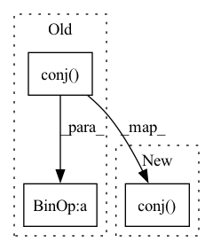

Pattern ID :11236
Before Change
spec_u = self.spec_unfold(torch.view_as_complex(spec))
iRnn = torch.view_as_complex(iRnn.unflatten(3, (self.frame_size, self.frame_size, 2)))
if self.cholesky_decomp:
iRnn = iRnn * iRnn.transpose(3, 4).conj()
ifc = torch.view_as_complex(ifc.unflatten(3, (self.frame_size, 2)))
if self.normalize_ifc:
ifc0 = ifc[..., -1]
ifc = ifc / (ifc0.unsqueeze(-1) + self.eps)After Change
spec_u = self.spec_unfold(torch.view_as_complex(spec))
iRnn = torch.view_as_complex(iRnn.unflatten(3, (self.frame_size, self.frame_size, 2)))
if self.cholesky_decomp:
iRnn = iRnn.matmul(iRnn.transpose(3, 4).conj() )
if not self.inverse:
iRnn = torch.linalg.inv(iRnn)
ifc = torch.view_as_complex(ifc.unflatten(3, (self.frame_size, 2)))In pattern: SUPERPATTERN
Frequency: 3
Non-data size: 3
Instances Fragment ID: 38351961
Project Name: rikorose/deepfilternet
Commit Name: 71013a3ff5bc0ff6435a10f2906e288588c36863
Time: 2022-10-31
Author: Rikorose@users.noreply.github.com
File Name: DeepFilterNet/df/multiframe.py
M Class Name: MfMvdr
N Class Name: MfMvdr
M Method Name: forward(4)
N Method Name: forward(4)
M Parent Class: MultiFrameModule
N Parent Class: MultiFrameModule
M File Name: DeepFilterNet/df/multiframe.py
N File Name: DeepFilterNet/df/multiframe.py
M Start Line: 292
M End Line: 294
N Start Line: 320
N End Line: 325
Before Change
// Diagonalize S to V \Lambda V^*
Lambda, V = jax.jit(eig, backend="cpu")(S)
// Lambda, V = eig(jax.device_put(S, device=jax.devices("cpu")[0]))
Vc = V.conj() .T
p = Vc @ p
B = Vc @ B
return Lambda, p, B, V
// Sanity check just to make sure those identities hold,After Change
// Lambda, V = jax.jit(eig, backend="cpu")(S)
// Lambda, V = eig(jax.device_put(S, device=jax.devices("cpu")[0]))
p = V.conj() .T @ p
B = V.conj().T @ B
return Lambda_real + 1j*Lambda_imag, p, B, V
Fragment ID: 38351949
Project Name: srush/annotated-s4
Commit Name: 2d0d9418c9b118de5a3a72d78910f8db1ee7c451
Time: 2022-06-05
Author: albertfgu@gmail.com
File Name: s4/s4.py
M Class Name: AnonimousClass
N Class Name: AnonimousClass
M Method Name: make_DPLR_HiPPO(1)
N Method Name: make_DPLR_HiPPO(1)
M Parent Class:
N Parent Class:
M File Name: s4/s4.py
N File Name: s4/s4.py
M Start Line: 1112
M End Line: 1118
N Start Line: 1112
N End Line: 1126
Before Change
ifc = torch.view_as_complex(ifc.unflatten(3, (self.frame_size, 2)))
iRxx = torch.view_as_complex(iRxx.unflatten(3, (self.frame_size, self.frame_size, 2)))
if self.cholesky_decomp:
iRxx = iRxx * iRxx.transpose(3, 4).conj()
spec_f = spec_u.narrow(-2, 0, self.num_freqs)
w = torch.einsum("...nm,...m->...n", iRxx, ifc).unsqueeze(1) // [B, 1, F, N]
spec_f = self.apply_coefs(spec_f, w)
if self.training:After Change
spec_u = self.spec_unfold(torch.view_as_complex(spec))
iRxx = torch.view_as_complex(iRxx.unflatten(3, (self.frame_size, self.frame_size, 2)))
if self.cholesky_decomp:
iRxx = iRxx.matmul(iRxx.transpose(3, 4).conj() )
if not self.inverse:
iRxx = torch.linalg.inv(iRxx)
ifc = torch.view_as_complex(ifc.unflatten(3, (self.frame_size, 2))) Fragment ID: 38351939
Project Name: rikorose/deepfilternet
Commit Name: 71013a3ff5bc0ff6435a10f2906e288588c36863
Time: 2022-10-31
Author: Rikorose@users.noreply.github.com
File Name: DeepFilterNet/df/multiframe.py
M Class Name: MfWf
N Class Name: MfWf
M Method Name: forward(4)
N Method Name: forward(4)
M Parent Class: MultiFrameModule
N Parent Class: MultiFrameModule
M File Name: DeepFilterNet/df/multiframe.py
N File Name: DeepFilterNet/df/multiframe.py
M Start Line: 244
M End Line: 247
N Start Line: 258
N End Line: 263